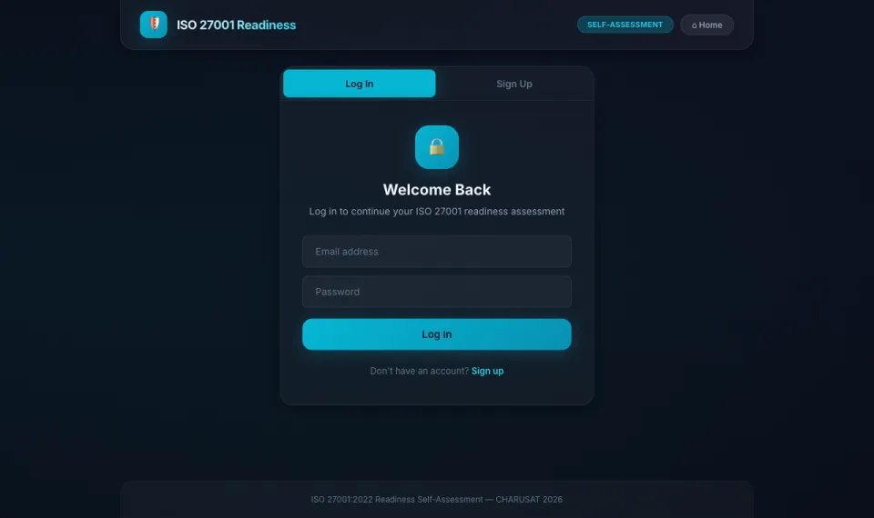

I build <AI/> systems and Security tools, turning ideas into things that think and fight back.
AI First Engineer leading product by day, evaluating frontier coding agents on the side. Offline RAG, agent swarms, honeypots: if it can learn or defend, I build it.
AI ENGINEERFORWARD DEPLOYEDLLM AGENT EVAL
⚡ AI ENGINEER × SECURITY BUILDER
▼
▼
I don't just train models — I ship things. I turn ideas into working systems that think, defend, and keep data where it belongs: on your machine.
[ ABOUT ME ]
SUBJECTN. VAGHASIYA
MATCH99.7%
CLEARANCEGRANTED
I'm Nikunj Vaghasiya, an AI engineer working where AI meets cybersecurity. At Groovy Web I'm an AI First Engineer leading product for a US clinical-research platform, three months after joining as an intern. For Snorkel AI I write the benchmark tasks frontier coding agents get graded on.
After hours I build: <RAG/> pipelines that run fully offline, <agents/> that triage security incidents, and honeypots that watch attackers work.
Most of my projects start with a question, like "what if the AI never needed the cloud?", and end as a working system. That curiosity is the whole job.
- ACCEPTED EVAL TASKS
- 82
- MONTHS, INTERN → PRODUCT LEAD
- 03
- PROJECTS BUILT
- 17
02
EXPERIENCE
MISSION LOG // 2024 → NOW
where the builds go to work. newest first.
-
JUN 2026 — NOWFULL-TIME
Groovy Web
AI First Engineer · leading product for DM Clinical Research (US client)
- INTERNJUN '26
- FULL-TIMEAUG '26
- PRODUCT LEADSEP '26
- Lead delivery of Nexus (app for clinic-owning providers) and Comtrack Lite (app for clinical-trial recruiters) across React Native mobile, React web and .NET admin: development, QA, staging demos, releases and support.
- Built features for Lumen, the patient app: appointment booking, plus study-based pricing that pays patients automatically as they complete each clinical-trial step.
- Turn US stakeholder requirements into workflows, catching missing scenarios across the provider, patient and recruiter apps before tickets get written.
- Shipped a production website in 3 days with Claude Code and Codex CLI agentic workflows.
- React Native
- React.js
- .NET
- Claude Code
- Codex CLI
- QA & releases
-
JAN 2026 — NOWCONTRACT
Snorkel AI
AI Evaluation Contributor · terminal-agent benchmarks & coding-agent evals
- ACCEPTED TASKS
- 82
- TERMINAL-BENCH 2.0 · 45
- TERMINAL-BENCH 3.0 · 10
- CODING-AGENT EVAL · 12
- CODING-AGENT EVAL · 15
- Designed Terminal-Bench 3.0 tasks that passed multi-model quality review and a difficulty gate measured on frontier Claude Opus and GPT agents.
- Built Python and Docker validation tooling: parallel grader mutation tests, repeatable pass/fail checks, and hardened graders that trace system calls.
- Python
- Docker
- pytest
- Linux / Bash
- LLM evaluation
-
MAY — JUN 2025INTERNSHIP
Exposys Data Labs
Cybersecurity Intern
-
JUN — JUL 2024INTERNSHIP
InternPe
Java Developer Intern
EDUCATION
B.Tech, Computer Engineering
CHARUSAT · 2023 — 2027 (expected)
FINAL YEAR // LOADING…
CERTIFIED
AWS Academy Graduate
Cloud Developing
CREDENTIAL // AWS
03
SKILLS & TOOLS
THE ARSENAL BEHIND EVERY BUILD.
LANGGRAPH
NEURAL // AGENTSOLLAMA
LOCAL // LLMRAG
RETRIEVAL // VECTORSHONEYPOTS
OFFENSIVE // TRAPREACT
INTERFACE // UI
FASTAPIFLASKNODE.JSEXPRESSNEXT.JSREACT NATIVE.NETSWIFTKOTLINELECTRONSOCKET.IOMCPCLAUDE CODECODEX CLICHROMADBGEMINI APIOPENAI APIDOCKERPOSTGRESQLMYSQLMONGODBREDISSQLITETYPESCRIPTJAVAPLAYWRIGHTPYTESTGITHUB ACTIONSVERCELPANDAS
04
FROM IDEAS TO BUILDS
local-first ai, security, client work & the tools in between. best first. classified = private source, hover to decrypt.
- query
- retrieve
- generate
- evaluate
- answer
VeritasRAG
Ask questions about private documents and get cited, confidence-scored answers, generated entirely on your own machine. No paid APIs, and nothing leaves the box.
- Hybrid BM25 + vector retrieval over ChromaDB, orchestrated with LangGraph
- Hardened by default: JWT, bcrypt, rate limits, account lockout, PII redaction, audit logs
- One-command demo with
./run.sh --demo
- Python
- FastAPI
- LangGraph
- Ollama
- ChromaDB
- React
- TypeScript
- Docker
RefineryFlow
Tracks every gold and silver lot through a working refinery, from metal receipt to stamped bars and the invoice. Built for a real client and running in production.
LOGICEach team (office, furnace, refinery, blind lab, compliance) enters weights and purity in its own lane. One calculation engine works out fine metal, melt and refining losses against tolerances, and every party's metal balance. Out come frozen VAT invoices, delivery notes and a chain-of-custody report.
- React 19
- Vite
- Node.js
- Vercel Functions
- MySQL / TiDB
- Playwright
- GitHub Actions
PhoneLink
Mirror, control and sync an Android phone from a Mac over an encrypted direct link, with no cloud in between.
LOGICQR pairing hands over a key that never crosses the network, and every frame is AES-256-GCM encrypted over raw TCP. The Android side streams screen, audio and camera as H.264 and performs taps through an accessibility service. The Mac menu-bar app turns trackpad and keys into gestures and syncs clipboard, files, notifications and SMS.
- Kotlin
- Swift
- SwiftUI
- CryptoKit
- Network.framework
- MediaCodec
SOC Swarm
A security operations center run by three AI agents. Watcher triages alerts, Analyst investigates, Enforcer remediates, and every step streams live to the dashboard.
- FastAPI
- LangGraph
- Socket.IO
- React 19
- TypeScript
- Tailwind
TradeReverie AI
An AI trading journal that grades every trade and turns emotions into performance data.
LOGICTraders log entries, stops, exits, sessions, emotion tags and chart screenshots. The backend computes win rate, profit factor, R:R, streaks and an equity curve, sliced by weekday, session and emotion. Gemini reads each trade with its screenshots and returns strict-JSON 1–10 scores with fixes, plus weekly reports, under a per-user daily AI limit.
- Next.js 14
- TypeScript
- FastAPI
- SQLAlchemy
- PostgreSQL
- Gemini 2.5 Flash
- Docker
LegalEase
Upload a contract and get clause-by-clause risk flags for liability, IP and termination, each grounded in the exact excerpt with a suggested rewrite. Also drafts five contract types, diffs versions and exports DOCX.
- Python
- Flask
- NLP
- TF-IDF retrieval
- SQLite
- python-docx

ISO 27001 Readiness Bot
Built for my Groovy Web final technical round. Walks a company through 30 questions across 7 Annex A domains. Gemini maps free-text answers to control IDs (and is blocked from inventing new ones), scores readiness per domain and exports a PDF gap report.
- Flask
- Gemini API
- ReportLab
- PostgreSQL
- Vercel
Trade Journal
A Mac app that logs trades in seconds and shows which habits cost money, with honest sample sizes.
LOGICPlans, IST-timed entries and exits, fees, emotions, mistake tags and screenshots go into a local SQLite journal. The analytics engine computes expectancy, drawdown, streaks, session heatmaps and mistake-cost rankings, and every rate carries its sample size and a confidence interval. AI reviews cite their evidence and are checked locally before they're saved.
- Electron
- Next.js 16
- React 19
- TypeScript
- SQLite
- shadcn/ui
- Playwright
ResumeIQ AI
Drop in a PDF résumé and get an ATS score, a six-axis skills radar, keyword gaps against the industry and a polished PDF report.
- React 19
- Vite
- Tailwind v4
- Zustand
- Express
- GPT-4o-mini
Chart Copilot
Lets AI agents read and drive a live TradingView chart, then pings the phone when a setup forms.
LOGICAn MCP server, adapted from an open-source base, attaches to TradingView Desktop over the Chrome DevTools Protocol so Claude or Codex agents can read the chart, edit Pine Script, replay and set alerts. Custom Pine indicators turn market-structure rules into marked setups from 1-minute data. A Node watcher forwards new setups to the phone and logs them into backtest journals.
- Node.js
- MCP SDK
- Chrome DevTools Protocol
- Pine Script
- Python
HoneyPy
An SSH and HTTP honeypot that poses as a server and a WordPress login, then records attacker IPs, usernames, passwords and commands. A dashboard ranks the top offenders.
- Python
- SSH
- Flask
- Dash
- pandas
Page Autopilot
Runs a Facebook Page on autopilot: schedules reels from a folder queue and reports reach with AI growth tips.
LOGICReels are sorted into a weekday queue, and OCR drops any that open with an out-of-date date card. A scheduler fills five IST slots a day through the Graph API, never posts twice and archives what went out. Daily insights feed Claude for growth actions, and a FastAPI dashboard shows the queue, schedule and stats.
- Python
- Graph API
- Claude API
- FastAPI
- ffmpeg
- Tesseract OCR
Swing Screener
Screens the Nifty 200 down to a low-drawdown swing-trade shortlist for filing-backed research.
LOGICPulls current Nifty 200 constituents from NSE and a year of adjusted prices, and stops if the data is stale. Filters on moving-average trend, strength against the Nifty 50, drawdown, ATR and liquidity, then ranks by the shallowest one-year drawdown. Output is a dated CSV that feeds a written report. It never places orders.
- Python 3.12
- pandas
- yfinance
- uv
- pytest
- AI Bootcamp Log ↗
Three weeks of daily AI builds at Groovy: a multi-provider LLM CLI, RAG with four chunking strategies, a 7-tool agent and a Gemini standup bot that posts to Slack.
- AI-Agent ↗
Express API with JWT auth, bcrypt, MongoDB and Redis.
- Ransomware lab ↗
Encrypt and decrypt simulator for studying attack behavior in isolation.
- FaceAttend · classified
Tkinter front end for a face-recognition attendance system. Early prototype, private.
05
TERMINAL
talk to the machine. type help, or tap a command.
Let's build something smart & secure
- CAREERLINKEDIN ↗
- CODEGITHUB ↗
- MAILNIKUNJPATEL23703@GMAIL.COM ↗
- LIVEISO 27001 BOT ↗